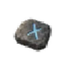
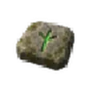

Sigils¶
Sigils are set into an item's empty socket. A sigil does something different in each kind of item: the table lists what it does in each.
Divine sockets
Divine Punch: Recolours a random number of ordinary sockets, at least one, into divine sockets. Preserves existing special sockets. Cannot be used with installed sigils.
| Name | Effect | How to get | |
|---|---|---|---|
| Sigil of Broken Chains | Magic weapon: 40% of increases to attack damage also apply to spell damage Helmet: 40% of increases to attack speed also apply to cast speed Weapon: 40% of increases to spell damage also apply to attack damage Cape: 40% of increases to cast speed also apply to attack speed Chest: 30% of increases to maximum health also apply to maximum eitr Shield: 100% of increases to block power also apply to parry bonus Legs: +1 projectile |
crafted | |
| Sigil of Fire | Chest: +2% to maximum fire resistance Armour: +6% fire resistance Weapon: 15% increased Fire Damage 20% increased burning chance with this weapon's hits |
crafted | |
 |
Sigil of Frost | Chest: +2% to maximum frost resistance Armour: +6% frost resistance Weapon: 15% increased Frost Damage 20% increased chill build-up with this weapon's hits |
crafted |
| Sigil of Lightning | Chest: +2% to maximum lightning resistance Armour: +6% lightning resistance Weapon: 15% increased Lightning Damage 20% increased shock chance with this weapon's hits |
crafted | |
 |
Sigil of Poison | Chest: +2% to maximum poison resistance Armour: +6% poison resistance Weapon: 15% increased Poison Damage 20% increased poison chance with this weapon's hits |
crafted |
| Sigil of the Ancient Roots | Weapon: 35% of thorns added to attack damage Tower shield: 20% increased block power of this shield 15% increased thorns Buckler, round shield: 25% increased parry bonus of this shield 15% increased thorns Chest: 25% increased thorns Magic weapon: 20% of thorns added to spell damage Helmet: 20% increased immobilize chance 15% increased damage against immobilized enemies Legs: 30% less knockback taken 15% increased thorns while standing still Cape: 8% of physical damage taken recovered as health |
crafted | |
| Sigil of the Ashen Crown | Chest: +3% to maximum fire resistance 20% increased health regeneration Weapon: 30% increased fire damage against burning enemies Magic weapon: Spells penetrate 10% fire resistance Shield: Gain 30% of thorns damage as extra fire damage Cape: 10% of fire damage taken recovered as health Legs: 10% increased movement speed while you are burning Helmet: Burning on you deals 30% less damage |
crafted | |
| Sigil of the Crimson Brood | Helmet: 25% increased bleeding damage Bleeding deals its damage 15% faster 10% reduced healing effect Magic weapon: Spells have 15% chance to cause bleeding 10% less maximum health Shield: 40% of piercing damage can cause bleeding 10% less block power Cape: Companions and summons deal 20% increased damage Companions and summons have 10% less maximum health Weapon: 30% increased damage against bleeding enemies 10% less maximum health Chest: 2% of physical attack damage leeched as health 20% less health regeneration Legs: 10% increased movement speed on low health 20% less maximum health |
crafted | |
| Sigil of the First Oath | Weapon: 5% of current rune shield added to attack damage Magic weapon: 5% of current rune shield added to spell damage Chest: 15% increased maximum rune shield Rune shield recharge starts 15% sooner Helmet: Recover 3% of maximum rune shield on kill Legs: 8% increased movement speed while rune shield is full Shield: 20% increased block power while rune shield is full Cape: 30% increased rune shield regeneration while rune shield is low |
crafted | |
| Sigil of the First Storm | Weapon: Gain 20% of this weapon's physical damage as extra lightning damage Cape: 15% increased area of auras +8% lightning resistance Helmet: Hits penetrate 8% lightning resistance 20% increased shock chance Chest: 10% increased attack speed while windy Legs: 6% increased movement speed 15% reduced stamina cost of running Shield: Gain 30% of thorns damage as extra lightning damage Magic weapon: Spells gain 15% of damage as extra lightning damage |
crafted | |
| Sigil of the Frost Wing | Cape: 30% reduced fall damage 10% increased movement speed while airborne Weapon: Gain 15% of this weapon's physical damage as extra frost damage Helmet: 50% increased chill build-up Chest: 15% of physical damage taken as frost damage Magic weapon: Spells gain 12% of damage as extra frost damage Legs: Chill on you is 30% weaker Shield: Parrying chills the attacker as a frost hit of 30% of the parried damage |
crafted | |
| Sigil of the Grave Mire | Shield: 50% of thorns damage converted to poison +10% poison resistance Weapon: Gain 12% of this weapon's physical damage as extra poison damage Helmet: Enemies can have +1 of your poisons at the same time 15% increased poison duration Cape: 10% of poison damage taken recovered as health Magic weapon: Spells gain 12% of damage as extra poison damage Chest: Poison on you lasts 40% shorter Legs: You are not slowed while sprinting |
crafted | |
| Sigil of the Last Flame | Helmet: 25% increased burning damage Hits penetrate 8% fire resistance Weapon: Attacks execute burning enemies at or below 8% of maximum health Magic weapon: Spells execute burning enemies at or below 8% of maximum health Chest: 20% increased fire damage while you are burning Legs: 15% increased movement speed if you killed recently Shield: Burning on you lasts 50% shorter while your shield is up Cape: Enemies you critically hit cannot regain health for 4 s |
crafted | |
| Sigil of the Misty Hive | Cape: 15% increased area of auras 10% increased effect duration Shield: 15% increased block power while your companion is near Chest: Your companion has +15% to all resistances Weapon: 20% increased damage against poisoned enemies Magic weapon: 20% increased spell area Helmet: 10% increased effect duration 8% increased cooldown recovery rate Legs: 30% increased evasion rating while running |
crafted | |
| Sigil of the Oath Devourer | Weapon: Gain 12% of this weapon's physical damage as extra spirit damage 10% reduced maximum rune shield Magic weapon: Spells gain 12% of damage as extra spirit damage 10% reduced maximum rune shield Helmet: 10% more spirit damage for each corrupted item equipped 10% reduced maximum rune shield Chest: 10% more maximum health for each corrupted item equipped -8% to all resistances Legs: 8% increased movement speed -5% to all resistances Shield: Gain 40% of thorns damage as extra spirit damage 15% reduced block power Cape: 20% increased damage against cursed enemies -5% to all resistances |
crafted |
See all currency.
Data from Path of Valheiman 6.0.12, extracted 2026-11-13.